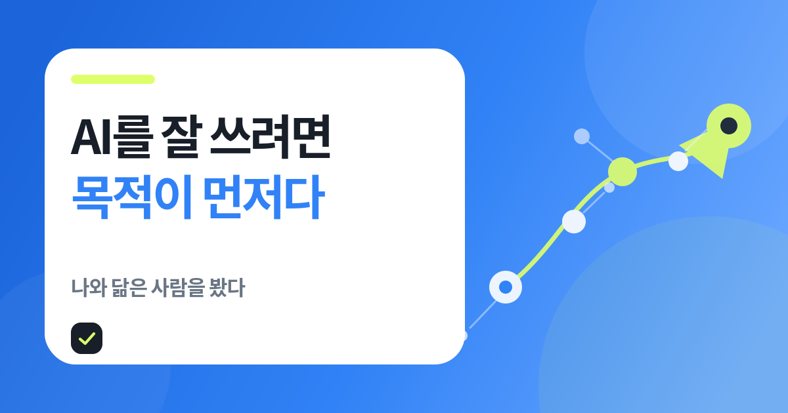

돈보다 남은 문장
“돈을 벌어야지”는 목적이 아니라 생존이라는 말이 영상 전체의 방향을 바꿨다.
인테리어·카페·현장 일·디자인을 거쳐 AI 교육으로 온 사람의 이야기를 들었다. 끝까지 보고 나니 성공담보다 “나는 왜 AI를 쓰는가”라는 질문이 더 오래 남았다.

“돈을 벌어야지”는 목적이 아니라 생존이라는 말이 영상 전체의 방향을 바꿨다.
AI 교육을 준비하고, Soul.md를 만들고, 비개발자로 구현해온 내 경험과 닮은 점이 많았다.
하지만 누구를 위해 무엇을 할지는 사람이 먼저 정해야 한다.
목적 없이 유행을 따라가던 사람이 자신의 과거 경험을 다시 연결하고, AI를 통해 다른 사람의 변화를 돕는 방향을 찾은 과정이었다.
목적이 없으면 더 좋은 모델과 더 많은 강의도 방향을 만들어주지 못한다. 목적이 생기면 인테리어·카페·현장 일·디자인처럼 흩어져 있던 경험도 갑자기 재료가 된다.
돈이 아니라 만들고 싶은 변화. [영상 17:19]
과거의 일이 AI 교육 역량으로 연결됐다. [영상 20:06]
기술적 실행을 맡고 질문을 확장하는 협업자. [영상 24:50]
목적·맥락·최종 판단은 사람이 맡는다.
이 글은 단순 영상 요약이 아니다. 영상에서 시작해 내가 왜 AI 교육과 개인 에이전트를 만들고 있는지 다시 적어본 생각 정리다.
자극적인 숫자였다. 그런데 영상은 실패담에서 끝나지 않고, 왜 그 사람이 유행을 따라다녔는지까지 들어갔다.
AI 수익화가 아니라 자신의 방향을 찾는 이야기로 바뀌는 순간, 영상이 갑자기 내 이야기에 가까워졌다.
AIXLIFE 공식 사이트는 나민수 대표를 13년 현장 경험과 600시간 이상 강의 경험, 1,500명 이상 교육 실적으로 소개한다. [출처 3]
새로운 도구에 빠지는 것, 비개발자인데 구현해보는 것, 결국 교육으로 다른 사람의 결과물을 만들고 싶어지는 것. 장면은 달라도 방향이 비슷했다.
처음에는 제목 때문에 눌렀다.
부업 강의 5천만 원.
수익은 0원.
솔직히 자극적이다.
그런데 25분이 지나고 남은 건 돈 이야기가 아니었다.
“돈을 벌어야지”는 목적이 아니라 생존이다.영상 17분대 발언을 짧게 요약
나는 이 문장에서 멈췄다.
나도 AI를 좋아한다. 새로운 모델이 나오면 써보고, 에이전트를 붙이고, 위키를 만들고, 바이브 코딩으로 대시보드와 웹페이지를 구현해본다. 상상한 게 실제로 움직일 때 재미있고, 아직도 흥분된다.
하지만 How만 계속 쌓다 보면 어느 순간 질문이 남는다.
그래서 나는 무엇을 만들고 싶은가.
누구를 돕고 싶은가.
왜 이걸 계속하고 있는가.
영상 속 나민수 대표가 여자친구의 질문을 피하다가 결국 목적을 찾은 과정이 낯설지 않았다. 내가 100문 100답으로 Soul.md를 만들고, 나를 아는 AI를 만들려고 한 이유도 비슷하다.
AI에게 나를 잘 도와달라고 하기 전에, 내가 어떤 사람인지부터 알아야 한다고 생각했기 때문이다.
결국 좋은 프롬프트보다 먼저 필요한 것은 좋은 자기 이해일 수도 있다.
2~3개월 동안 해외 영상과 칼럼을 계속 보고 직접 따라 했다고 설명한다.
새 에이전트·LLM-Wiki·바이브 코딩을 실제 생활과 블로그에 붙여보며 배운다.
자신을 “반개발자”라고 표현하며 노코드·자동화·외주 작업까지 확장했다.
개발 전공이 아니어도 AI에게 묻고 대시보드·웹앱·자동화 흐름을 직접 구현해왔다.
AI를 정답 도구가 아니라 개인화된 협업 도구로 가르쳐야 한다고 말한다.
AI 빌더스 랩을 3명·3시간 실습으로 준비하는 이유도 한 사람이 자기 결과물을 끝내게 하기 위해서다.
‘나를 알아줘’ GPTs를 통해 목적을 찾는 질문을 만들었다고 설명한다.
나는 100문 100답으로 Soul.md를 만들고, 에이전트가 내 성향과 판단 기준을 이해하도록 했다.
인테리어의 순서·마감, 카페의 고객 니즈, 현장 경험이 지금의 교육과 시스템 설계에 연결됐다고 말한다.
업무·투자·블로그·가족·AI 에이전트 경험이 따로 보였지만, 지금은 개인 AI 운영체계를 만드는 하나의 흐름이 됐다.
AI 학교를 통해 사람들이 자신의 목적을 찾도록 돕고 싶다고 말한다.
나 역시 작은 실습 모임과 공개 보고서를 통해 AI를 실제 행동으로 연결하는 교육을 준비하고 있다.
아래는 영상 속 본인 설명을 시간순으로 정리한 타임라인이다. 금액·기간·사용자 수는 외부 회계 검증이 아니라 인터뷰 자기보고임을 전제로 봐야 한다.
전공을 살려 현장 일을 시작했지만 육체적으로 힘들었다. 훗날 이 경험은 철거·배치·마감처럼 시스템을 순서대로 설계하는 감각으로 연결됐다고 설명한다.
카페 운영, 페인트, 가정집 화장실 청소 스타트업, 토목 현장을 거쳤다. 당시에는 서로 무관해 보였지만 고객 니즈와 현장 실행을 배운 시간이었다.
스마트스토어·주식·부동산 등 부업 강의에 약 5,000만 원을 썼지만 돈을 벌지 못했다고 말한다. 영상의 가장 자극적인 숫자지만, 핵심은 목적 없이 유행을 따라간 패턴이다.
로고 디자인에서 시작해 상세페이지와 워드프레스까지 확장했고, 이 일로 앞서 쓴 돈을 회수했다고 설명한다.
행사장에서 PPT가 필요하다는 말을 듣고 먼저 명함을 건넸다. 1건 1,200만 원씩 3년간 이어졌고, 작업 시간은 AI 도입 후 한 달→10일→1시간으로 줄었다고 말한다.
ChatGPT가 글의 기본 틀을 만들고 Midjourney가 이미지를 생성하는 경험을 한 뒤, 해외 자료를 집중적으로 보며 직접 따라 했다고 설명한다.
홍대에서 디자이너 60명을 대상으로 첫 오프라인 AI 디자인 강의를 했고, 이후 교육 활동이 본격화됐다고 말한다.
여자친구의 반복된 질문을 통해 목적을 고민했고, 사람들이 AI로 자신의 목적을 찾도록 돕는 AI 학교를 인생 목표로 잡았다.
스티브 잡스의 2005년 스탠퍼드 연설처럼 점은 뒤에서 보며 연결된다. 다만 “언젠가 연결될 것”이라고 믿는 데서 끝나면 안 된다. 지금 가진 경험이 실제로 누구의 어떤 문제를 해결할 수 있는지 작은 결과물로 확인해야 한다. [출처 6]
AI는 How를 폭발적으로 늘린다. 그래서 오히려 Why와 Context가 없는 사람은 더 빠르게 헤맬 수도 있다.
누구의 어떤 변화를 만들고 싶은지 한 문장으로 정한다.
내가 겪은 일, 실패, 반복해서 끌리는 주제를 꺼낸다.
조사·구조화·초안·코딩처럼 실행 단계에 AI를 붙인다.
글·수업·웹앱·에이전트처럼 실제로 보이는 결과를 만든다.
사람의 반응과 오류를 보고 목적과 방법을 다시 고친다.
돈·조회수·툴 사용량이 아니라, 누구의 어떤 상태를 바꾸고 싶은지를 정한다. 목적은 거창한 사명문이 아니라 지금의 가설이면 충분하다.
내가 실제로 살아본 장면은 AI가 대신 만들 수 없는 Context다. 실패·현장 감각·취향·판단 기준이 차별점이 된다.
조사, 질문 생성, 구조화, 콘텐츠 변환, 코드 작성, 자동화처럼 실행 가능한 부분을 맡긴다. 출력은 반드시 사용자가 검수한다.
“AI로 돈 버는 아이디어 알려줘. 요즘 뜨는 부업 10개 추천해줘.”“AI를 배우고도 결과물을 만들지 못하는 3명을 대상으로, 3시간 안에 각자의 작은 에이전트나 웹페이지를 완성하게 돕고 싶다. 설명과 실습을 어떻게 나누면 좋을까?”완벽한 인생 목적이 아니라 다음 30일 동안 검증할 방향이다. 입력 내용은 브라우저 안에서만 조합되며 서버로 전송하지 않는다.
완벽한 문장보다 이번 주에 확인할 수 있는 행동 하나를 붙여보자.
아직 시작하지 않은 모임이다. 그래서 지금 이 생각을 운영 원칙으로 먼저 남겨두려고 한다.
첫 20분은 기능 목록이 아니라 “왜 만들고 싶은가”를 묻는다.
많이 배우는 것보다 수업이 끝날 때 자기 파일 하나가 남아야 한다.
각자의 Context를 듣고 바로 피드백하려면 작은 인원이 맞다.
질문·초안·실행을 돕지만 최종 판단과 검수는 사용자가 맡는다.
막힌 이유와 수정 과정을 기록해 다음 사람의 재사용 가능한 절차로 만든다.
수강생 한 명이 자기 목적에 맞는 결과물을 만들고, 다음 날 혼자 다시 해볼 수 있는가. 내가 만들고 싶은 교육은 그 기준에 더 가깝다.
목적을 거대한 선언문으로 만들면 다시 미루게 된다. 90일 동안 사람과 결과물을 만나며 가설을 업데이트하는 편이 낫다.
내가 반복해서 했던 일과 좋아했던 장면을 모은다.
AI 빌더스 랩 소규모 파일럿으로 실제 반응을 본다.
한 번의 수업을 재사용 가능한 자산으로 만든다.
나는 이 영상에 크게 공감했지만, 공감이 검증을 대신하면 안 된다.